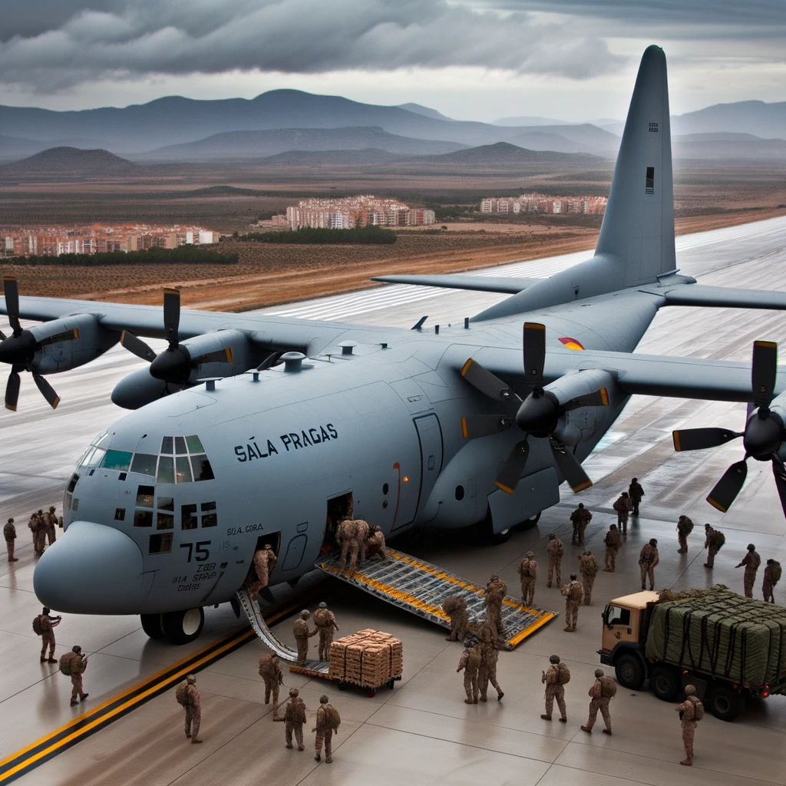

Avió de transport militar de fabricació nord-americana
El Lockheed C-130 Hercules és un avió de transport militar
desenvolupat i fabricat per la companyia nord-americana Lockheed (ara
Lockheed Martin). Des de la seva introducció a la dècada dels 1950,
s'ha convertit en un dels avions de transport més llargs en servei i
ha estat utilitzat per més de 60 països arreu del món.
Característiques i punts destacats del Lockheed C-130 Hercules:
Versatilitat: El C-130 ha estat dissenyat per realitzar una àmplia
gamma de missions, incloent transport de tropes, evacuació mèdica,
reabastiment en vol, i suport aerotransportat. Operacions en pistes
curtas: Un dels punts forts de l'Hercules és la seva capacitat
d'operar en pistes curtas i no preparades, permetent accedir a zones
remotes o de difícil accés. Fiabilitat: Amb més de sis dècades en
servei, el C-130 ha demostrat ser un avió robust i fiable en tot tipus
de condicions i missions. Diverses variants: Al llarg dels anys, s'han
desenvolupat nombroses variants del C-130, adaptades a diferents
necessitats i missions. Algunes d'aquestes variants inclouen el C-130J
Super Hercules, una versió modernitzada amb nous motors i aviónica.
Capacitat de càrrega: Pot transportar una gran varietat de càrregues,
des de tropes i vehicles fins a grans equips i material de
subministrament. Participació en missions humanitàries: A més de les
seves missions militars, el C-130 ha jugat un paper clau en nombroses
missions humanitàries, com ara el transport d'ajuda humanitària a
zones afectades per desastres naturals. Desenvolupament i producció:
El C-130 va realitzar el seu primer vol l'any 1954 i va entrar en
servei amb la Força Aèria dels Estats Units l'any 1956. Des de
llavors, ha estat produït en gran quantitat i continua en producció en
versions modernitzades. Reconeixement mundial: El C-130 Hercules és
reconegut arreu del món com un dels avions de transport més exitosos i
versàtils mai construïts. El Lockheed C-130 Hercules ha estat i
continua sent un pilar en les operacions de transport aeri militar a
tot el món, oferint una combinació inigualable de versatilitat,
fiabilitat i capacitat de càrrega. La seva llarga història de servei i
la seva contínua utilització per moltes forces aèries són un testimoni
de la seva excel·lència i durabilitat.